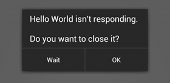

Main/UI Thread:-
All apps, when started, run in a single Main thread. It’s also known as the User Interface (or UI) thread.
All components that run in the same process run in this thread.
But,blocking UI thread by running everything in it will result in poor response times and the display of the dreaded Application Not Responding(ANR) dialog.
ANR (Application Not Responding) is triggered when:-
- If an app can’t respond to user input within 5 seconds.
- If Broadcast receivers haven’t finished executing within 10 seconds.

Measures for avoiding ANR:-
- Do less work as much as possible on the Activity's main thead.
- Use separate threads for executing long running operations like database transactions, file downloading,complex calculations etc.
There are various alternatives available in Android for moving our processing to the background thread :-
- Use your own Threads and use the Handler class to notify the main thread when the work is done
- Use the AsyncTask class to do the work in the background
- Use Loaders for asynchronous data loading
- Use IntentService for background services performing set tasks like internet updates or data processing.